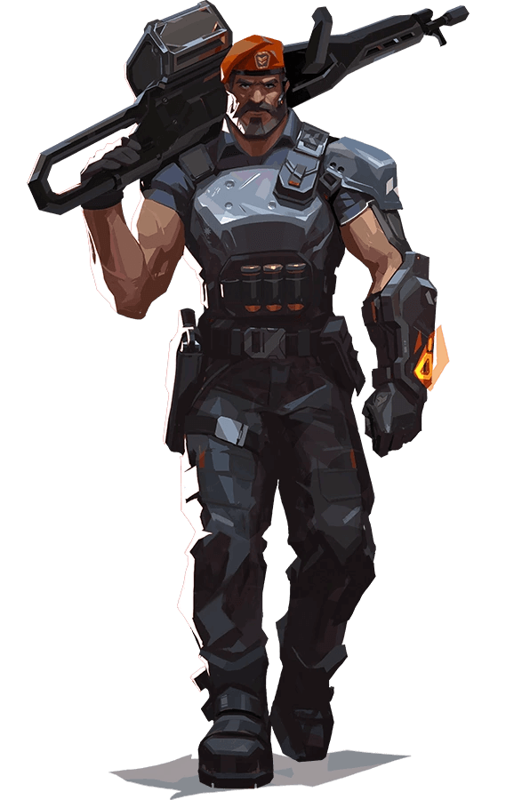
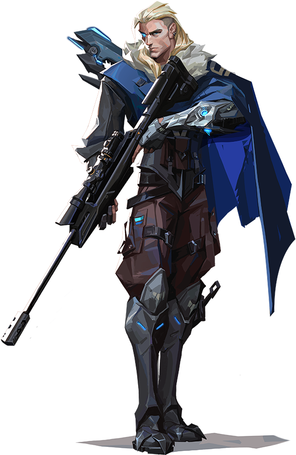
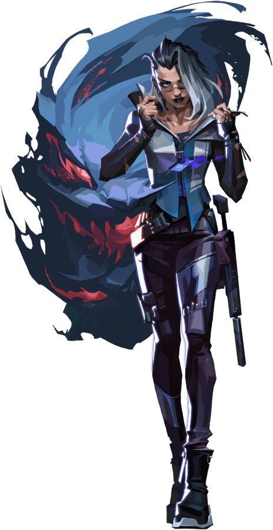

- Vindo diretamente dos EUA, o arsenal orbital de Brimstone garante que o esquadrão dele esteja sempre em vantagem. Sua capacidade de oferecer utilidade com precisão a distância faz dele um comandante inigualável na linha de frente.
- Chegando com tudo diretamente do Reino Unido, o poder estelar de Phoenix reluz em seu estilo de luta, incendiando o campo de batalha com luz e estilo. Tendo ajuda ou não, ele entra na luta como e quando achar que deve.

- Como uma verdadeira fortaleza chinesa, Sage traz segurança para si mesma e para a equipe aonde quer que vá. Capaz de reviver aliados e rechaçar investidas agressivas, ela oferece um centro de calmaria em meio ao caos da batalha.

- Nascido sob o eterno inverno das tundras russas, Sova rastreia, encontra e elimina inimigos com eficiência e precisão implacáveis. Seu arco personalizado e suas habilidades inigualáveis de reconhecimento garantem que nenhuma presa escape.
- Viper, a química dos Estados Unidos, emprega uma variedade de dispositivos químicos venenosos para controlar o campo de batalha e prejudicar a visão do inimigo. Se as toxinas não matarem a presa, os seus jogos mentais certamente o farão.

- Criada no coração do México, Reyna domina o combate individual, destacando-se a cada abate efetuado. Sua capacidade só é limitada por sua própria perícia, tornando-a bastante dependente de desempenho.

- Breach, o homem-biônico sueco, dispara poderosos jatos cinéticos para forçar a abertura de um caminho pelo território inimigo. O dano e a interrupção que ele causa garantem que nenhuma luta seja justa.

- Raze chega do Brasil em uma explosão de carisma e armas letais. Com seu estilo de jogo "porradeiro", ela é craque em desentocar inimigos entrincheirados e limpar espaços apertados com uma bela dose de BUUUM!

- Mandando um salve direto da Austrália, Skye e sua equipe de feras desbravam territórios hostis. Com seus poderes de cura e suas criações que partem pra cima dos inimigos, qualquer equipe ficará mais forte e mais segura tendo Skye como aliada.

- Astra, a Agente ganense, utiliza energias cósmicas para moldar o campo de batalha a seu bel-prazer. Com total domínio da sua forma astral e um talento estratégico nato, ela está sempre anos-luz à frente dos inimigos.

- KAY/O é uma máquina de guerra construída com um único propósito: neutralizar Radiantes. Ele é capaz de suprimir habilidades inimigas, comprometendo a capacidade de contra-ataque dos adversários e dando a si próprio e a seus aliados uma vantagem essencial em combate.

- Fade, uma caçadora de recompensas turca, usa o poder dos pesadelos para capturar os segredos dos inimigos. Personificando o próprio terror, ela persegue os alvos e revela seus medos mais profundos para, depois, destruí-los na escuridão.
